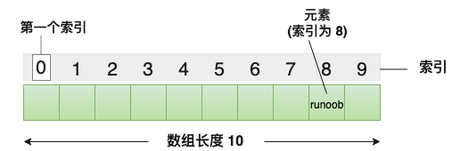
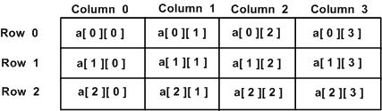
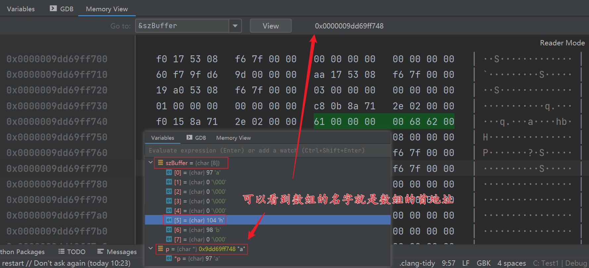
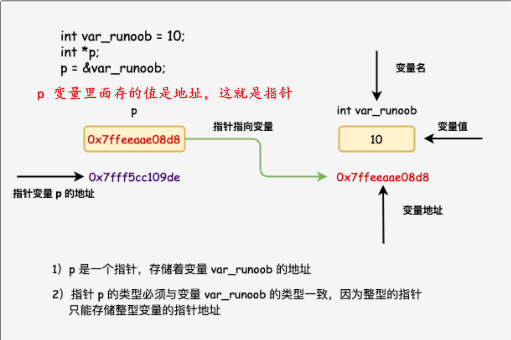
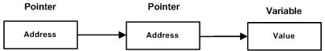
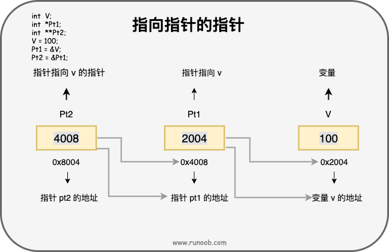

函数
函数声明
函数声明会告诉编译器函数名称及如何调用函数。函数的实际主体可以单独定义。
return_type function_name( parameter list );
在函数声明中，参数的名称并不重要，只有参数的类型是必需的。
C 语言的函数需要声明在前，使用在后，一般是将声明写到头文件中。#inlcude “your.h”
函数定义
// 需要改变实参得值的时候形参就需要用指针 * 或者取地址 &。
return_type function_name( parameter list ) {
body of the function
}
- 返回类型： 一个函数可以返回一个值。return_type 是函数返回的值的数据类型。有些函数执行所需的操作而不返回值，在这种情况下，return_type 是关键字 void 。
- 函数名称： 这是函数的实际名称。函数名和参数列表一起构成了函数签名。
- 参数： 参数就像是占位符。当函数被调用时，您向参数传递一个值，这个值被称为实际参数。参数列表包括函数参数的类型、顺序、数量。参数是可选的，也就是说，函数可能不包含参数。
- 函数主体： 函数主体包含一组定义函数执行任务的语句。
| 调用类型 | 描述 |
|---|---|
| 传值调用 | 该方法把参数的实际值复制给函数的形式参数。在这种情况下，修改函数内的形式参数不会影响实际参数。 |
| 引用调用 | 通过指针传递方式，形参为指向实参地址的指针，当对形参的指向操作时，就相当于对实参本身进行的操作。 |
可变参数
#include <stdio.h>
#include <stdlib.h>
#include <stdarg.h>
// 第一个参数表示参数的个数
int Add(int a, ...) {
va_list v1;
va_start(v1, a);
int tmp = 0;
for (int i = 0; i < a; i++) {
tmp += va_arg(v1, int);
}
va_end(v1);
return tmp;
}
int main() {
int res = Add(4, 2, 3, 4, 5);
printf("%d", res);
system("pause");
return 0;
}
数组
数组的声明并不是声明一个个单独的变量，比如 zhaocai0、zhaocai1、...、zhaocai99，而是声明一个数组变量，比如 zhaocai，然后使用 zhaocai[0]、zhaocai[1]、...、zhaocai[99] 来代表一个个单独的变量。【当然你也可以声明一个数组，从下标 [1] 开始使用】
所有的数组都是由连续的内存位置组成。最低的地址对应第一个元素，最高的地址对应最后一个元素。
- 数组变量名就是首地址，例如
int a[]--> 默认情况下：a == a[0] == 首地址 - 不管是一维数组还是多维数组其存储结构都是顺序存储形式，即数组中的元素是按一定顺序依次存放在内存中的一块连续的内存空间中(地址连续）。

数组声明
// 一维数组，arraySize 必须是一个大于零的整数常量
type arrayName [ arraySize ];
// 二维数组，相当于一维数组得每一个元素也是一个一维数组
type arrayName [ arraySize1 ][ arraySize2 ];
// 多维数组
type arrayName [size1][size2]...[sizeN];

int a[3][4] = {
{0, 1, 2, 3} , /* 初始化索引号为 0 的行 */
{4, 5, 6, 7} , /* 初始化索引号为 1 的行 */
{8, 9, 10, 11} /* 初始化索引号为 2 的行 */
};
// 访问
int val = a[2][3];
#include <stdio.h>
#include <stdlib.h>
int main() {
// 初始化数组
char szBuffer[8] = {'a', [5] = 'h', 'b'};
char *p = szBuffer;
printf("数组的首地址是：%p\r\n", p);
for (int i=0; i < 8; i++) {
printf("%c ", szBuffer[i]);
}
printf("\r\n数组的首地址是：%p\r\n", szBuffer);
system("pause");
return 0;
}

在 C 中，数组是非常重要的，我们需要了解更多有关数组的细节。下面列出了 C 程序员必须清楚的一些与数组相关的重要概念：
| 概念 | 描述 |
|---|---|
| 多维数组 | C 支持多维数组。多维数组最简单的形式是二维数组。 |
| 传递数组给函数 | 您可以通过指定不带索引的数组名称来给函数传递一个指向数组的指针。 |
| 从函数返回数组 | C 允许从函数返回数组。 |
| 指向数组的指针 | 您可以通过指定不带索引的数组名称来生成一个指向数组中第一个元素的指针。 char *p; char szBuffer[] = {}; p = szBuffer; |
数组形式的形参声明
// 方式 1 指针形式
void myFunction(int *param) {}
// 方式 2 指定大小
void myFunction(int param[size]) {}
// 方式 3 不指定大小
void myFunction(int param[]) {}
返回值是数组
C 语言不允许返回一个完整的数组作为函数的参数。但是，您可以通过指定不带索引的数组名来返回一个指向数组的指针。C 不支持在函数外返回局部变量的地址，除非定义局部变量为 static 变量。
int * myFunction() {...}
#include <stdio.h>
#include <stdlib.h>
#include <time.h>
/* 要生成和返回随机数的函数 */
int * getRandom( )
{
static int r[10];
int i;
/* 设置种子 */
srand( (unsigned)time( NULL ) );
for ( i = 0; i < 10; ++i)
{
r[i] = rand();
printf( "r[%d] = %d\n", i, r[i]);
}
return r;
}
int main ()
{
/* 一个指向整数的指针 */
int *p;
int i;
// 因为函数定义在 main 函数前面，所以不用额外声明
p = getRandom();
for ( i = 0; i < 10; i++ )
{
printf( "*(p + %d) : %d\n", i, *(p + i));
}
return 0;
}
指针
每一个变量都有一个内存位置，每一个内存位置都定义了可使用 & 运算符访问的地址。而指针可以指向任意内存地址。指针也就是内存地址，指针变量是用来存放内存地址的变量。
就像其他变量或常量一样，在使用指针存储其他变量地址之前，必须对其进行声明。
指针声明：type *var_name;
- type 是指针的基类型，它必须是一个有效的 C 数据类型。
- var_name 是指针变量的名称。
- 用来声明指针的星号
*。

指针使用：定义一个指针变量、把变量地址赋值给指针、访问指针变量中可用地址的值。这些是通过使用一元运算符 * 来返回位于操作数所指定地址的变量的值。【* 是取值的，& 是取地址的】
#include <stdio.h>
int main ()
{
int var = 20; /* 实际变量的声明 */
int *ip; /* 指针变量的声明 */
char szBuffer[] = "zhaocai";
char *cp = szBuffer;
ip = &var; /* 在指针变量中存储 var 的地址 */
printf("var 变量的地址：%p\n", &var );
/* 在指针变量中存储的地址 */
printf("ip 指针变量存储的地址：%p\n", ip );
/* 使用指针访问值 */
printf("*ip 变量的值：%d\n", *ip );
/* 数组的变量名就是首地址 */
printf("szBuffer 数组变量的地址: %p\n", &szBuffer);
/* 在指针变量中存储的地址 */
printf("cp 指针变量存储的地址: %p\n", cp );
/* 使用指针访问值 */
printf("*cp 变量的值: %c\n", *cp );
return 0;
}
NULL 指针：在变量声明的时候，如果没有确切的地址可以赋值，为指针变量赋一个 NULL 值是一个良好的编程习惯，不然的话会是随机值，很危险。赋为 NULL 值的指针被称为空指针。NULL 指针是一个定义在标准库中的值为零的常量。
| 概念 | 描述 |
|---|---|
| 指针的算术运算 | 可以对指针进行四种算术运算：++、--、+、- |
| 指针数组 | 可以定义用来存储指针的数组。 |
| 指向指针的指针 | C 允许指向指针的指针。 |
| 传递指针给函数 | 通过引用或地址传递参数，使传递的参数在调用函数中被改变。 |
| 从函数返回指针 | C 允许函数返回指针到局部变量、静态变量和动态内存分配。 |
指针的运算
指针指向（存放）的是一个地址，地址是用数来表示的，既然是数那肯定可以进行算数运算咯。
++、--、+、-、+=、-=、==、>、<
- 指针的每一次递增，它其实会指向下一个元素的存储单元。
- 指针的每一次递减，它都会指向前一个元素的存储单元。
- 指针在递增和递减时跳跃的字节数取决于指针所指向变量数据类型长度，比如 int 就是 4 个字节
#include <stdio.h>
const int MAX = 3;
int main () {
int var[] = {10, 100, 200};
int i, *ptr;
/* 指针中的数组地址 */
ptr = var;
// 也可以这样循环遍历数组
//while (ptr <= &var[MAX - 1]) {}
for ( i = 0; i < MAX; i++)
{
printf("存储地址：var[%d] = %p\n", i, ptr );
printf("存储值：var[%d] = %d\n", i, *ptr );
/* 指向下一个位置
* 如果定义的是一个 int 型的指针，那么每次移动肯定是 4 个字节。
* 这里定义的是一个指向 int 型数组的指针，每次 ++ 相当于数组的下标 +1，本质上也是移动了 4 字节。
* 如果是指向 char 型的指针，那么 ptr++ 就移动 1 字节。
*/
ptr++;
}
return 0;
}
指针数组
用来存储指针的数组，理论上数组存什么取决于数组定义的类型。
// 指向字符串的指针数组
const char *names[] = {"Zara Ali", "Hina Ali", "Nuha Ali", "Sara Ali"}
// 指向整型的指针数组
#include <stdio.h>
const int MAX = 3;
int main () {
int *var[] = {10, 100, 200};
for (int i = 0; i < MAX; i++) {
printf("Value of var[%d] = %d\r\n", i, var[i]);
}
return 0;
}
指向指针的指针
指向指针的指针是一种多级间接寻址的形式，或者说是一个指针链。通常，一个指针包含一个变量的地址。当我们定义一个指向指针的指针时，第一个指针包含了第二个指针的地址，第二个指针指向包含实际值的位置。【就是说指针指向的地址里面存的也是地址】

多级指针声明：type **var_name;

#include <stdio.h>
const int MAX = 3;
int main () {
int var = 110;
int *p1 = &var;
int **p2 = &p1;
printf("直接通过 var 获取变量 var 的值： %d\r\n",var);
printf("通过一级指针 *p1 获取变量 var 的值： %d\r\n",*p1);
printf("通过二级指针 **p2 获取变量 var 的值：%d\r\n",**p2);
printf("===================================\r\n");
printf("* 是取值，& 是取地址\r\n");
printf("一级指针 *p1 的地址是 p1： %p\r\n",p1);
printf("二级指针 **p2 的地址是 p2： %p\r\n",p2);
printf("二级指针 **p2 里面存的值是“一个地址”，该地址就是 p1 的地址： %p\r\n",*p2);
return 0;
}
指针在函数中的使用
传递指针给函数：只需要简单地声明函数参数为指针类型即可。
从函数返回指针：int * myFunction(){}
register 关键字（有机会能使变量使用到寄存器
register int a） --> 寄存器。暗示编译程序相应的变量将被频繁地使用，如果可能的话，应将其保存在 CPU 的寄存器中，以加快其存储速度。// 32 位寄存器 eax ebx ecx edx esi edi esp ebp eip eflags // 64 位寄存器
练习
计算一个一维数组的总和
int nArr[10] = {12,158,14,12,16,8,152,12,3,55};计算一个二位数组中每一个一位数组的平均值
int nArr2[4][3] = { {12,15,12}, {15,33,99}, {88,77,44}, {99, 55, 75} };找出一个一维数组中最大的值
int nArr[10] = {12,158,14,12,16,8,152,12,3,55};使用指针获取该数组中最大的数（
int nArr[5] = {12,15,33,555,1};）计算(
char szStr[] = "this is a c string";)字符串的长度，并且输出若封装函数用 sizeof 计算的话注意一个坑，形参和实参。
当将数组作为实参传递到另一个函数中时，另一个函数的形参相当于一个指针变量， 因为将数组的名作为实参时，就是将数字的首地址作为实参，所以在 test 函数中输出的 sizeof(arr) 其实得到的是一个整型数组的长度(所占的字节数)，所以结果是 8, 再用其除以 int 所占的字节数(4), 结果就是 2 。
(这样是得不到准确的数组的长度的，建议的操作是在定义数组的函数中计算数组的长度,，在以实参的形式传递出去，这样其他的函数变可以获得数组的长度)
将下列两个字符串进行拼接，并且输出 char szStrA[] = "zhaocai"; char szStrB[] = "在学 C 语言";
输出提示并且接收两个字符串，对比是否一致，并且输出结果
输出提示并且接收用户名和密码，拼接成一个字符串输出
实现加减乘除函数
用递归实现（0 + 1 + 2 ... 100）
使用指针编写字符串处理库
- 字符串长度计算函数 strlen
- 字符串对比函数 strcmp
- 字符串拷贝函数 strcpy
- 字符串拼接函数 strcat
- 字符串切割函数 strslic
- 字符串子串搜索 strstr
- 字符串子串总数 StrSubCount
#include <stdio.h>
#include <string.h>
const int MAX = 3;
// 计算平均值的函数
double getAverage(int *nArr, int size) {
int sum = 0;
for (int i=0; i<size; i++) {
sum += nArr[i];
}
return (double)sum / size;
}
int main () {
// 题目 1
int nArr1[10] = {12,158,14,12,16,8,152,12,3,55};
int ret1 = 0;
for (int i=0; i<10; i++) {
ret1 += nArr1[i];
}
printf("nArr1 数组之和为：%d\r\n", ret1);
// 题目 2
int nArr2[4][3] = {
{12,15,12},
{15,33,99},
{88,77,44},
{99, 55, 75}
};
for (int i=0; i<4; i++) {
double avg = 0;
avg = getAverage(nArr2[i], 3);
printf("第 %d 个一维数组的值是：%lf\r\n", i+1, avg);
}
// 题目 3、4
int nArr3[10] = {12,158,14,99999,16,8,1000,12,3,965};
int *pt3 = &nArr3;
int ret3 = 0;
// 0 ~ 9
while (pt3 < &nArr3[10]) {
(ret3 < *pt3) ? (ret3 = *pt3):ret3;
pt3++;
}
printf("nArr3 数组中的最大值是：%d\r\n", ret3);
// 题目 5，参考指针移动的知识吗，那么我们计算数组的长度就是：数组类型 == 数组每个元素所占的字节数。
// sizeof(var) 返回变量的大小
char szStr[] = "this is a c string";
int length1 = sizeof(szStr) / sizeof(char);
// 这样写的话最后一个下标就会为 5
int nArr5[] = {5,4,[5] = 55, [3]=33, 6};
// 这样写的话最后一个下标就会为 6
int nArr6[] = {5,4,[5] = 55, 6};
int length2 = sizeof(nArr5) / sizeof(int);
int length3 = sizeof(nArr6) / sizeof(int);
printf("szStr 数组的长度是：%d\r\n", length1);
printf("nArr5 数组的长度是：%d\r\n", length2);
printf("nArr6 数组的长度是：%d\r\n", length3);
// 题目 6
char szStrA[] = "zhaocai";
char szStrB[] = "在学 C 语言";
printf("%s %s\r\n", szStrA, szStrB);
strcat(szStrA, szStrB);
printf("%s\r\n", szStrA);
return 0;
}
// 第五题的内存信息，可以看到数组最后会自动加上 \00 结束符，也算数组长度。【这点和字符串不一样】
szStr = {char [19]}
[0] = {char} 116 't'
[1] = {char} 104 'h'
[2] = {char} 105 'i'
[3] = {char} 115 's'
[4] = {char} 32 ' '
[5] = {char} 105 'i'
[6] = {char} 115 's'
[7] = {char} 32 ' '
[8] = {char} 97 'a'
[9] = {char} 32 ' '
[10] = {char} 99 'c'
[11] = {char} 32 ' '
[12] = {char} 115 's'
[13] = {char} 116 't'
[14] = {char} 114 'r'
[15] = {char} 105 'i'
[16] = {char} 110 'n'
[17] = {char} 103 'g'
[18] = {char} 0 '\000'
length = {int} 19
#include <stdio.h>
// 递归求和函数
int sum(int N) {
// 结束条件
if (N == 0) {
return 0;
} else {
return N + sum(N-1);
}
}
int main () {
// 题目 10
int n = 100;
printf("0 ~ 100 的和：%d\r\n", sum(n));
return 0;
}
D:\Program Files (x86)\JetBrains\Toolbox\apps\CLion\ch-0\222.4167.35\bin\mingw\x86_64-w64-mingw32\include\string.h
#include <stdio.h>
// 计算字符串长度，不包括 '\0' 结束符
size_t myStrlen(const char *szBuffer) {
register char *tmp = szBuffer;
int count = 0;
if (NULL == szBuffer || '\0' == *tmp) {
return 0;
}
while (*tmp != '\0') {
tmp++;
count++;
}
return count;
/*register char *tmp = szBuffer;
while (*tmp++);
return (tmp - szBuffer -1);*/
}
// 字符串比较，str1 > str2 返回正数，str1 < str2 返回负数，str1 = str2 返回 0
int myStrcmp (const char *str1, const char *str2) {
while (*str1 == *str2++) {
if (*str1++ == '\0') {
return 0;
}
}
if (*str1 == '\0') return -1;
if (*--str2 == '\0') return 1;
return (unsigned char) *str1 - (unsigned char) *str2;
// 依次向前比较
/*while (*str1 == *str2 && '\0' != *str1 && '\0' != *str2) {
str1++;
str2++;
}
if (*str1 - *str2 > 0) {
return 1;
}else if (*str1 - *str2 < 0) {
return -1;
} else {
return 0;
}*/
/*int nLength1 = myStrlen(str1);
int nLength2 = myStrlen(str2);
if (nLength1 != nLength2) {
return 0;
}
for (size_t i=0; i<nLength1; i++) {
if (*str1++ != *str2++) return false;
}
return 1;*/
}
// 如果 字符串 s1 与 s2 的前 size 个字符相同，函数返回值为 0。
int myStrncmp(register const char *s1, register const char *s2, register size_t n)
{
if (n) {
do {
if (*s1 != *s2++)
break;
if (*s1++ == '\0')
return 0;
} while (--n > 0);
if (n > 0) {
if (*s1 == '\0') return -1;
if (*--s2 == '\0') return 1;
return (unsigned char) *s1 - (unsigned char) *s2;
}
}
return 0;
}
// 字符串复制
char * myStrcpy(char * dest, const char *src) {
/*register char * str1 = dest;
while (*str1++ = *src++) {
}
return dest;*/
register char *str1 = dest;
if (NULL == str1 || NULL == src) {
return NULL;
}
while ('\0' != *src) {
*str1++ = *src++;
}
*str1 = '\0';
return dest;
}
// 字符串拼接 strcat
char *myStrcat(char *dest, const char *str) {
/*register char *s1 = dest;
while (*s1++ != '\0')
*//*EMPTY*//* ;
s1--;
while (*s1++ = *str++)
*//*EMPTY*//* ;
return dest;*/
register char * src = str;
if (NULL == str || '\0' == *str) {
return dest;
}
while (*dest != '\0') {
dest++;
}
while (*src != '\0') {
*dest++ = *src++;
}
*dest = '\0';
return dest;
/*int nLength1 = myStrlen(dest);
int nLength2 = myStrlen(str);
for (size_t i=0; i<nLength2; i++) {
dest[nLength1 + i] = str[i];
}
dest[nLength1 + nLength2] = '\0';
return dest;*/
}
// 字符串切割 strslic
char *myStrSlic(const char *src, char *dest, int start, int end) {
int nLength = myStrlen(src);
if(nLength < start || (end - start) > nLength) {
return NULL;
}
int size = end - start;
for (size_t i=0; i<size; i++) {
dest[i] = src[start + i];
}
dest[size] = '\0';
return dest;
}
// 搜索字串 strstr，返回 subStr 第一次在 str 中的位置
char * myStrstr(const char *str, const char *subStr) {
int nLength = myStrlen(str);
int nSubLength = myStrlen(subStr);
if(nSubLength > nLength) return -1;
for (size_t i=0; i<nLength; i++) {
int nFlag = 0;
for (size_t j=0; j<nSubLength; j++) {
if (subStr[j] == str[i + j]) {
nFlag++;
if (nFlag == nSubLength) return i;
}
}
}
return -1;
}
int main () {
// 题目 7、8、11
char szBuffer1[] = "zhaocai 在睡觉。";
char szBuffer2[] = "zhaocai";
char szBuffer3[] = "zhaocai strcpy";
char szBuffer4[] = {0};
char szBuffer5[] = " 在睡大觉~";
printf("通过 myStrlen 计算的长度是：%d\r\n", myStrlen(szBuffer1));
printf("通过 myStrcmp 比较的结果是：%d\r\n", myStrcmp(szBuffer1,szBuffer2));
printf("通过 myStrcpy 复制的结果是：%s\r\n", myStrcpy(szBuffer4,szBuffer3));
myStrcat(szBuffer2,szBuffer5);
printf("通过 myStrcat 拼接的结果是：%s\r\n", szBuffer2);
// printf("通过 myStrlen 计算的长度是：%d\r\n", myStrlen(szBuffer6));
myStrSlic(szBuffer6,szBuffer7, 1, 5);
printf("通过 myStrSlic 获取指定位置的结果是：%s\r\n", szBuffer7);
char szBuffer10[] = "zhoacai mao";
char szBuffer11[] = "occ";
int index = myStrstr(szBuffer10, szBuffer11);
printf("第一次出现字串的位置：%d\r\n", index);
return 0;
}
D:\CPP_Project\Test1\cmake-build-debug\Test1.exe
通过 myStrcat 拼接的结果是：catcatcatcatdddddddddddd
szBuffer9 的值是：dddddddddddd
szBuffer6 的值是：dddddddddd
szBuffer7 的值是：ddddddddddd
Process finished with exit code 0
----------------------- 在 Clion 下运行会发生内存覆盖 -------------------------
// 因为编译器分配内存可能是连续的，也可能是不连续的。 Clion 会将相邻的变量分配到连续的地址。由于 szBuffer6、szBuffer7、szBuffer8、szBuffer9 定义的时候都没有分配指定的内存，GCC 会分配覆盖。
- Clion --> GCC
- Visual Studio --> MSVC
----------------------------------------------------------------------------
#include <stdio.h>
char *myStrcat(char *dest, const char *str) {
int nLength1 = myStrlen(dest);
int nLength2 = myStrlen(str);
for (size_t i=0; i<nLength2; i++) {
dest[nLength1 + i] = str[i];
}
dest[nLength1 + nLength2] = '\0';
return dest;
}
int main() {
char szBuffer6[] = "zhaocai mao";
char szBuffer7[] = {0};
char szBuffer8[] = "catcatcatcat";
char szBuffer9[] = "dddddddddddd";
myStrcat(szBuffer8,szBuffer9);
// 为什么执行了 myStrcat 会改变 szBuffer6、szBuffer7
// 明明操作的是 szBuffer8、szBuffer9
// 调试看一下内存就会知道结果
printf("通过 myStrcat 拼接的结果是：%s\r\n", szBuffer8);
printf("szBuffer9 的值是：%s\r\n", szBuffer9);
printf("szBuffer6 的值是：%s\r\n", szBuffer6);
printf("szBuffer7 的值是：%s\r\n", szBuffer7);
}
前人栽树
- C 指针 | 菜鸟教程 (runoob.com)
- C 数组 | 菜鸟教程 (runoob.com)
- C 函数 | 菜鸟教程 (runoob.com)
- C 语言如何计算数组的长度_i.czy 的博客-CSDN 博客_c 语言求数组长度 length
- How do I read the source code for a C library in CLion - Stack Overflow
- C 标准库
实现-阿里云开发者社区 (aliyun.com) - C 标准库
实现 - wuyudong - 博客园 (cnblogs.com) - 在调试器中查看变量的内存 - Visual Studio (Windows) | Microsoft Docs